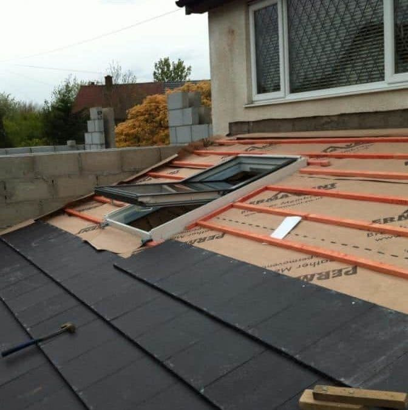
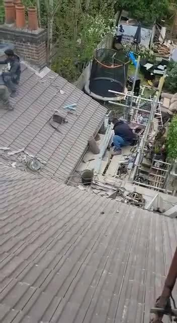
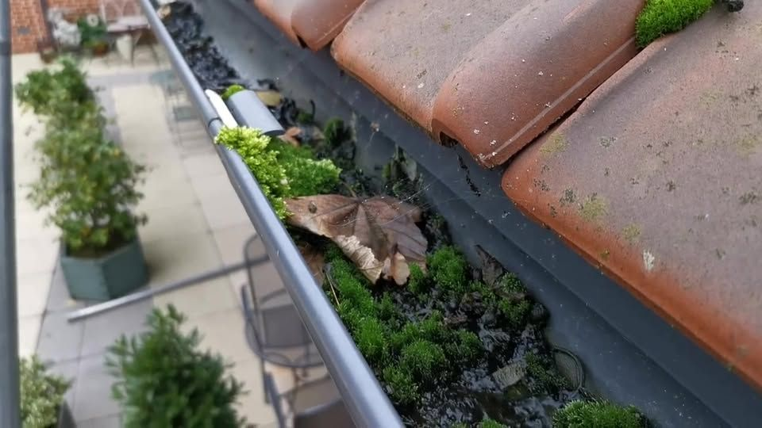
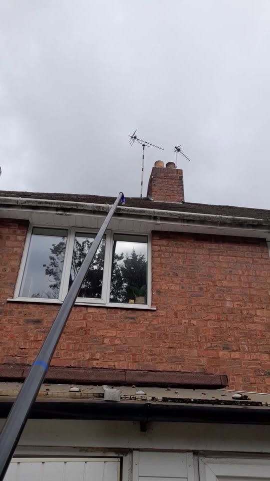
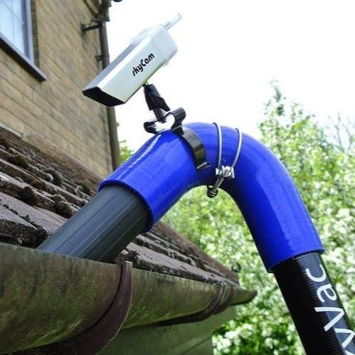
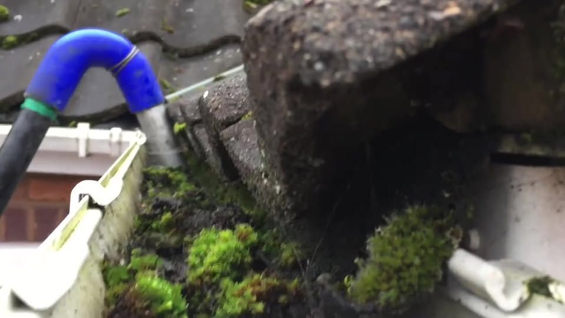

Gutter clearing from £60Wolverhampton & the West Midlands
Roofs fixed. Gutters cleared. No fuss.
Reliable, friendly roofing and guttering across Wolverhampton and the West Midlands. Roof repairs and replacements, chimney repointing, roof cleaning and gutter clearing.
About us
Reliable, friendly, and we know roofs
We pride ourselves on our reliability, a friendly approach and most importantly our knowledge of the industry. Hassle free: we take care of everything.
- 100% recommend · 10 Facebook reviews
- 5.0 ★ on Google
- Gutter clearing from £60


Services
How we can help
Free quotes, clear prices agreed before we start.
Roof repair & replacement
From replacing broken tiles to a full new re-roof, hassle free.
Chimney repointing
Chimneys repointed and made weather-tight.

Roof cleaning
Moss on roof tiles can rot timber and block gutters. A full steam clean brings the roof back.

Gutter clearing
Industrial SkyVac gutter vacuum, reaching up to three storeys from the ground, with our own power supply.

Gutter repair & replacement
Leaking or overflowing gutters repaired, or a new gutter system installed.
Gutter clearing prices
- Terraced house£60
- Semi-detached house£70
- Detached house£80
Prices as last published on our Facebook page. Confirmed when you book.
How it works
Simple from start to finish
Message or call
Ring 07487 377137 or send us a message.
We book you in
We give you a price and book the next available date.
Sorted
Gutters cleared or roof fixed, and we tidy up after.
Reviews
What customers say
★★★★★“Just got gutters cleaned by this company, a superb job and a really friendly guy too. No fuss, no mess, a great job start to finish.”Pete, Facebook
★★★★★“I had some roof tiles replaced and my gutters repaired, they came on time and were very professional.”Google review
★★★★★“I had my gutters emptied by this company did a great job, thanks again”Google review


Areas we cover
Local to you
Based in Wolverhampton and covering the West Midlands. Call to check we cover your area.
Wolverhampton & the West Midlands
Need a hand? Let’s talk.
Free quotes. Call or text 07487 377137 or email proroofandguttersolutions1@outlook.com.